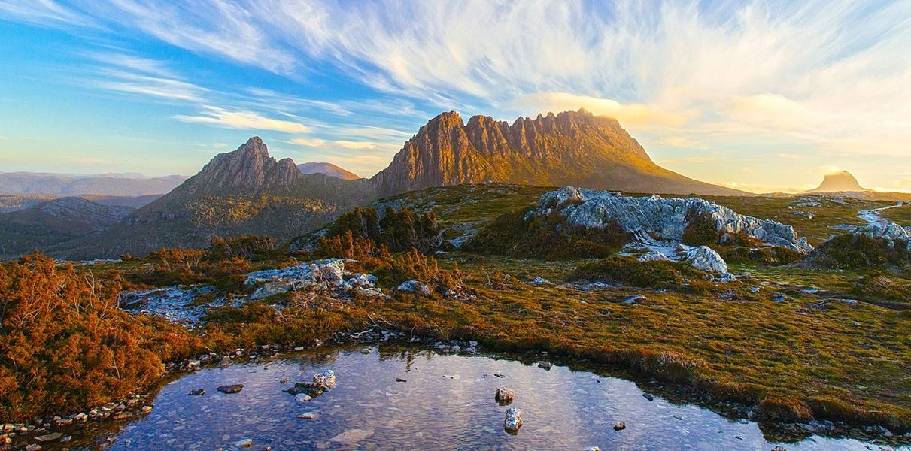
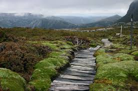
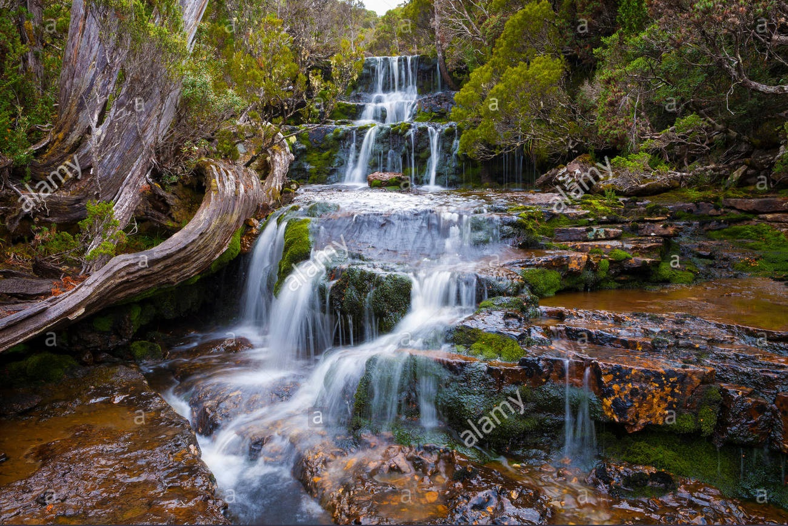

Cradle Mountain-Lake St. Clair
Cradle Mountain–Lake St Clair National Park, with its ancient rainforests and alpine heaths, is home to the world-famous Overland Track and iconic Cradle Mountain. Part of the Tasmanian Wilderness World Heritage Area, the park is one of the state's most special places, where ancient pines fringe glacial lakes and icy streams cascade down rugged mountains.
Activites to do
Watlking, strolling, camping, boat rides, lake cruises and trout fishing
Things to do near Lake St Clair
Weindorfer's Chalet is the rustic former home of Gustav and Kate Weindorfer and is the starting point for the world-famous Overland Track. This magnificent six-day walk passes through the heart of some of the world's finest mountain terrain to majestic Lake St Clair, the deepest lake in Australia.
Cradle Valley and the surrounding areas contain many Aboriginal historic sites, identified by remnant stone tools, caves, rock shelters and stone sources. These can be explored on the Aboriginal Cultural Walk that departs from Lake St Clair at the southern end of the park.
Other Images
|  |  |
 |  |